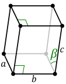
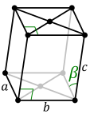
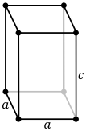
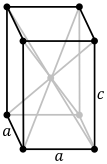

固体物理导论
固体物理主要研究对象：和。研究的手段：。
晶体结构
晶体的基本特点
固体可分为和非晶体，而又分为和。
晶体有以下：
- 组成晶体的原子按一定的方式；
- 有固定的熔点；
- 单晶体具有方向性：。
原子的周期性阵列
理想晶体是由的在空间而构成的。可由单个原子，多个原子或分子组成。
⭐️的定义：晶体结构用来描述，在的每个阵点上附有一群原子，这样一个原子群称为。在空间重复就形成晶体结构。
⭐️的定义：由 所确定的一族点就定义了一个，点阵就是点在空间中的规则排列，点阵是一种数学上的抽象，只有当原子基元以同样方式置于每个阵点上，才能形成晶体结构。
⭐️基本关系：。
| 面心立方晶格 | 例：氯化钠晶体结构 |
|---|
 | |
⭐️平移矢量的定义：u, v, w是整数，给定三个基本平移矢量, 和。 ，即从任意一个阵点去观察原子排列时，同在观察到的原子排列在各方面都是一样的，且通过适当选择u, v, w，它们始终满足点阵定义方程，那么这个点阵和平移矢量, 和就称为的。
⭐️点阵平移操作定义：晶体通过晶体平移矢量平行于自身的位移。
晶体的使晶体结构与自身重合。
⭐️的定义：初基轴, 和所确定的平六面体称为一个初基晶胞(单胞)，通过适当的平移操作，晶胞可以填充整个空间。
一个是一个的的晶胞，同一点阵，可以有方式选择初基轴和对应的，但中的原子数目(密度)都是一样的。中只含有一个阵点(平行六面体的8个角隅，1/8共享，体积为)。
⭐️的另一种选择方式，维格纳-赛兹原胞。把某个阵点同所有与它相邻的阵点用直线连接起来，在处，作垂面和垂线，以这种方式围成的最小体积就是维格纳-赛兹原胞。
点阵的基本类型
晶体通常可以分为七大晶系，十四种布拉菲点阵。
| 晶系 | 单胞基矢的特性 | 布拉菲点阵 | 图示 | 例 |
|---|
| 三斜晶系 | | 简单三斜 |  | 蔷薇辉石 |
| | 简单单斜 |  | 石膏、锂辉石 |
| | 底心单斜 |  | 石膏、锂辉石 |
| | 简单正交 |  | 异极矿、黄玉 |
| | 底心正交 |  | 异极矿、黄玉 |
| | 体心正交 |  | 异极矿、黄玉 |
| | 面心正交 | | 异极矿、黄玉 |
| | 三角 | | 方解石 |
| | 简单四方 |  | 金红石、锆石 |
| | 体心四方 |  | 金红石、锆石 |
| | 六角 | | 霞石 |
| | 简单立方 |  | |
| | 体心立方 |  | 氯化铯 |
| | 面心立方 | | 氯化钠 |
晶面指数系统
⭐️：点阵中的所有点全部位于一系列相互平行的直线上，这些直线称为晶列。
⭐️：表示晶列的方向，从一个阵点沿某个晶列到另一阵点作位移矢量。
⭐️[mnp]：晶向矢量在三晶轴上投影的互质整数，同类晶向记为。譬如 <100>，在正方晶系中，上述晶向族中包含的晶向有六个晶向。
⭐️：点阵中的所有阵点全部位于一系列相互平行等距的平面上，这样的平面系称为晶面。
⭐️(hkl)：h、k、l是晶面与三晶轴的截距倒数的互质整数，也称为密勒指数。
找出在轴上，以点阵常数度量的截距。这些轴可以是初基的也可以是非初基的。取这些截距的倒数，然后化成与之具有同样比例的三个互质整数，将结果写在括号里(hkl)。
截距无限大，相应的指数就是零，若一个晶面截晶轴于原点的负侧，则相应的指数就是负的，在其上方放置符号作为标记，例如。
常见晶体结构范例
| 晶体 | 布拉菲点阵 | 图示 | 晶体结构 | 描述 |
|---|
| Si | 面心立方 | | | Si金刚石结构：面心立方+2 Si原子，两套面心立方沿对角线平移1/4套构而成。 |
| ZnS(闪锌矿) | 面心立方 | | | 闪锌矿结构：两套面心立方沿对角线平移1/4套构而成，一套为Zn，一套为S。 |
简单点阵：基元含有一个原子；复式点阵：基元含有一个以上原子。
每一节最后，均附上复旦大学蒋玉龙老师的《半导体物理学》的录播课。
晶体衍射和倒易点阵
这一节所叙述的方法告诉我们。